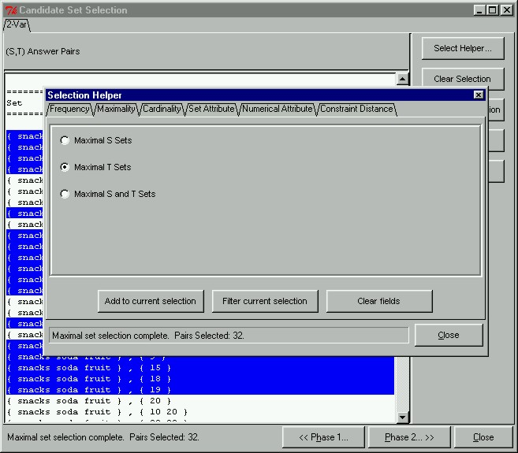

 |
The Selection HelperIn keeping with the spirits of supporting user exploration, the prototype can automatically assist users in finding and selecting interesting candidates through the Selection Helper. The Selection Helper automatically helps us select pairs based on frequency, maximality, cardinality, numerical attribute, set attribute or constraint distance criteria that is specified through the interface. To open the Selection Helper window, we click on the "Select Helper..." button in the Candidate Set Selection window. This will open the window shown here. In this demonstration, we are only interested in pairs containing maximal consequent sets. This is specified in the "Maximality" tab of the "Selection Helper" window.
|